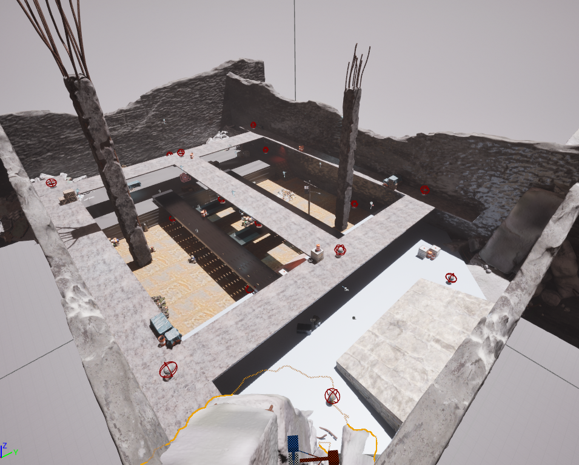

2100YAH is a story-focused action game set in a world where humans have vanished and only robots remain, struggling to survive an energy crisis. You play as SCRAP-E, a scrappy robot who wakes up in a junkyard and slowly uncovers a bigger secret about his origins—and maybe even a way to save what's left of the world.
For this project, I worked as the map editor. I redesigned the entire game environment, cleaned up the level layout, and adjusted the lighting to better match the abandoned, post-human atmosphere we wanted to create. My goal was to make the world feel more immersive and connected to the game's lore, while also fixing visual issues to create a smoother experience for players.
That is the arena map for 2100AH,

Fig 1